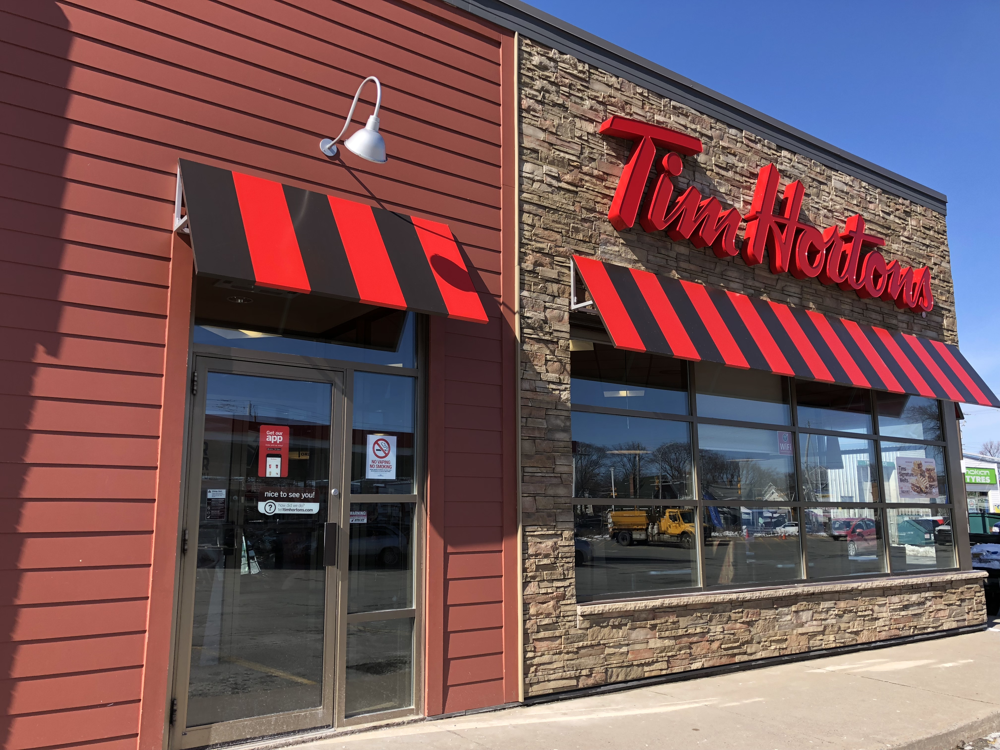
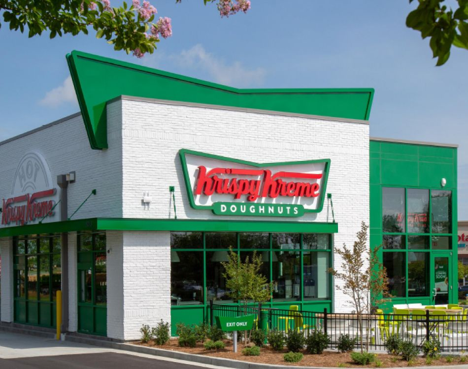
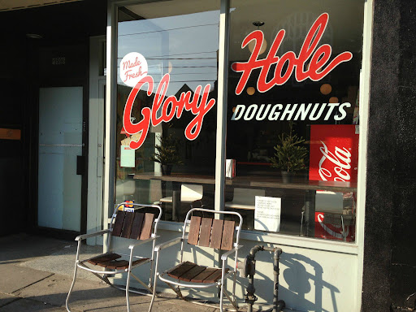
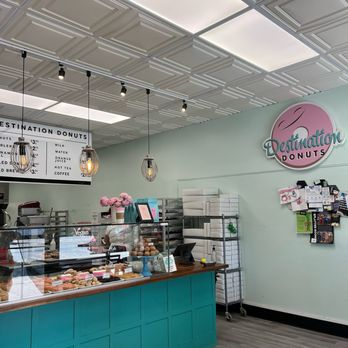
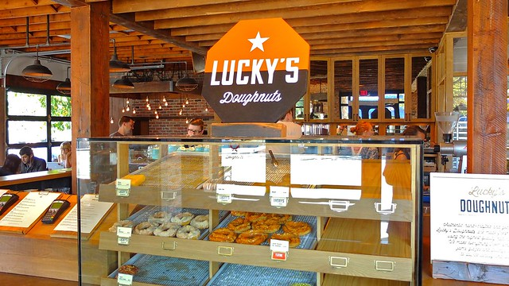

DOUGHNUTS
A DUTCH DELIGHT!
By Schuyler McClean

Said to be an unofficial national food, doughnuts are sold at every corner in Canada. From Tim Horton's, to Krisply Kreme, to local shops, doughnuts satisfy anyone and everyone with many flavours. The most popular flavours being:
- APPLE FRITTER
- HONEY CRULLER
- BOSTON CREAM
- CHOCOLATE DIP
- OLD FASHIONED PLAIN
- HONEY DIP
- SOUR CREAM GLAZED
- MAPLE DIP
TIM HORTONS
Canada
Tim Hortons, Canada’s beloved coffee and doughnut chain, has been delighting customers since 1964. Founded by hockey player Tim Horton, the shop originally offered just two doughnuts: apple fritters and Dutchies. Over time, its menu expanded to include classics like Boston cream, maple dip, and the bite-sized Timbits. As the brand grew beyond Canada, it embraced local flavors while maintaining its signature Canadian charm. Seasonal and specialty doughnuts keep things exciting, ensuring there’s always something new alongside the traditional favorites. Despite evolving tastes and trends, doughnuts remain at the heart of Tim Hortons’ identity. From nostalgic classics to innovative creations, Tim Hortons continues to blend tradition with modern flavors, making it a go-to destination for doughnut lovers everywhere.

KRISPY KREME DOUGHNUTS
Canada
Krispy Kreme, the world-famous doughnut chain, has been satisfying sweet cravings in Canada since 2001. Known for its signature Original Glazed doughnut, the brand quickly gained a loyal following. While it first launched in the U.S. in 1937, its expansion into Canada brought the same warm, melt-in-your-mouth experience that made it iconic. Over the years, Krispy Kreme has introduced a variety of flavors, from chocolate iced and maple dip to limited-time seasonal creations. Despite evolving tastes, the fresh doughnuts remain at the heart of the brand. Many locations still feature the famous "Hot Light," signaling when a fresh batch is ready. Though its Canadian presence is smaller than some competitors, Krispy Kreme remains a beloved destination for doughnut lovers. Whether grabbing a dozen for a celebration or indulging in a warm treat, Canadians continue to enjoy the brand’s perfect mix of tradition and innovation.

GLORY HOLE DOUGHNUTS
Toronto, ON
Glory Hole Doughnuts has been a Toronto favorite since opening its doors in 2012. Known for its handmade, gourmet doughnuts, this small-batch bakery takes a creative approach to classic treats. Each doughnut is crafted with high-quality ingredients, offering unique flavors like birthday cake, lemon meringue, and peanut butter & jelly. Unlike large chains, Glory Hole Doughnuts focuses on artisanal quality, with each doughnut made fresh daily. Its menu features both classic and seasonal flavors, ensuring there’s always something new to try. The bakery has built a loyal following, drawing locals and visitors alike with its indulgent, oversized creations. With a commitment to fresh, handmade doughnuts and bold flavors, Glory Hole Doughnuts continues to stand out in Toronto’s thriving food scene. Whether craving a nostalgic favorite or an inventive new twist, doughnut lovers know they’ll find something special at this beloved bakery.

DADDY O DOUGHNUTS
Mississauga, ON
Daddy O Doughnuts, a hidden gem in Mississauga, has earned a devoted following for its handcrafted, old-school doughnuts. Known for using traditional techniques and high-quality ingredients, this family-run shop serves up some of the most indulgent treats in the GTA. The menu features a mix of nostalgic classics and creative flavors, from rich Boston cream and maple bacon to funfetti and crème brûlée. Each doughnut is made fresh daily, ensuring a perfect balance of soft, fluffy texture and bold flavor. Seasonal specials keep things exciting, giving customers new reasons to stop by. Despite being a small, independent shop, Daddy O Doughnuts has made a big impact, drawing doughnut lovers from all over. With its dedication to quality and creativity, it remains a must-visit destination for those seeking the perfect sweet treat in Mississauga.

FLUFFY GLAZE DOUGHNUTS
Guelph, ON
Fluffy Glaze, a beloved doughnut shop in Guelph, has gained a loyal following for its light, airy doughnuts and creative flavors. Focused on small-batch, handcrafted treats, this local gem offers a fresh take on the classic doughnut experience. The menu features a mix of timeless favorites and unique creations, from classic glazed and cinnamon sugar to inventive flavors like matcha, s’mores, and lemon raspberry. Each doughnut is made with care, ensuring a soft, fluffy texture and just the right amount of sweetness. Seasonal offerings and limited-time specials keep customers coming back for something new. With its commitment to quality and fresh, handmade treats, Fluffy Glaze has become a go-to spot for doughnut lovers in Guelph. Whether stopping by for a morning pick-me-up or a weekend indulgence, visitors can always count on delicious, perfectly crafted doughnuts.
LUCKY'S DOUGHNUTS
Vancouver, BC
Lucky’s Doughnuts, a staple in Vancouver’s doughnut scene, has been serving up artisanal, handcrafted treats since 2012. Operated by the team behind 49th Parallel Coffee, this shop takes a gourmet approach to classic doughnuts, pairing them perfectly with expertly brewed coffee. Each doughnut is made from scratch daily, using high-quality ingredients and traditional techniques. The menu features a mix of classic flavors like vanilla glaze and apple fritters, alongside inventive creations such as peanut butter and jelly, pistachio cream, and the ever-popular crème brûlée. Seasonal specials and limited-time offerings keep things fresh, giving customers new flavors to look forward to. With its focus on quality, creativity, and a perfect coffee pairing, Lucky’s Doughnuts has become a must-visit for Vancouverites and visitors alike. Whether craving a nostalgic favorite or an elevated twist on a classic, doughnut lovers know they’ll find something exceptional at Lucky’s.
